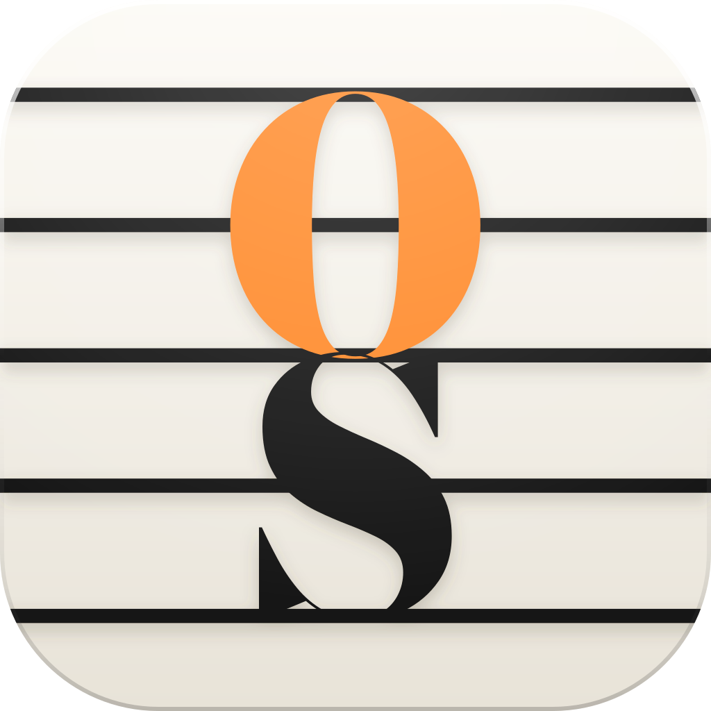

Also from Outhentic · Windows
Outhentic Scores.
A free sheet-music reader for Windows, with the same design language as OSE. Library and setlists, pedal page turns, pen annotation, and the metronome, tuner and audio player built in.
See Outhentic Scores →